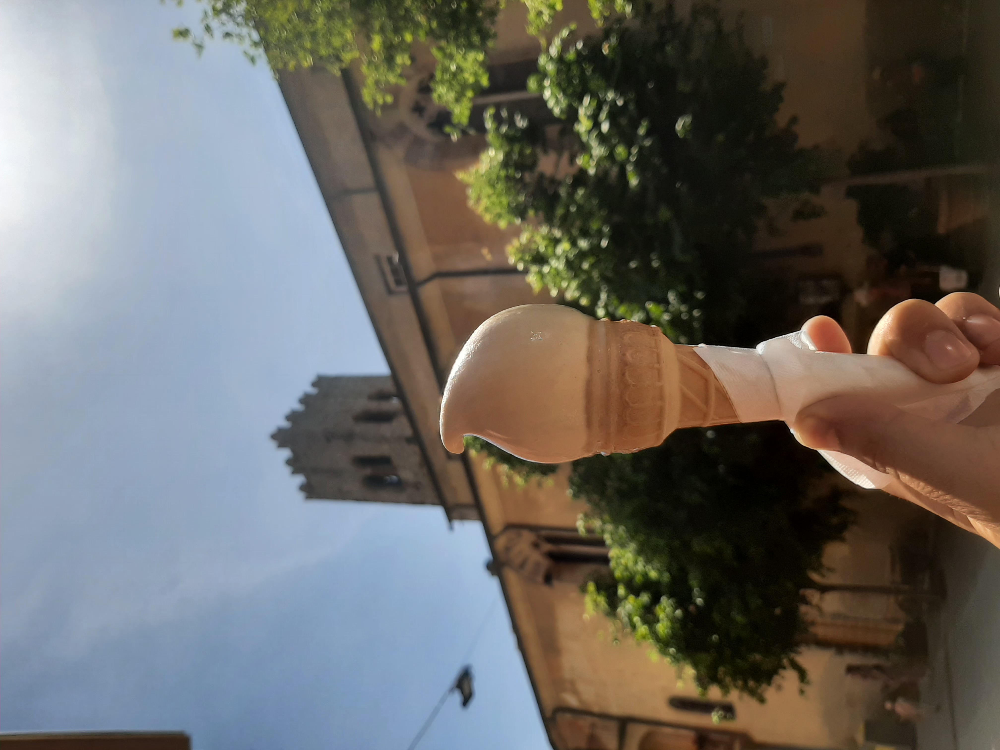
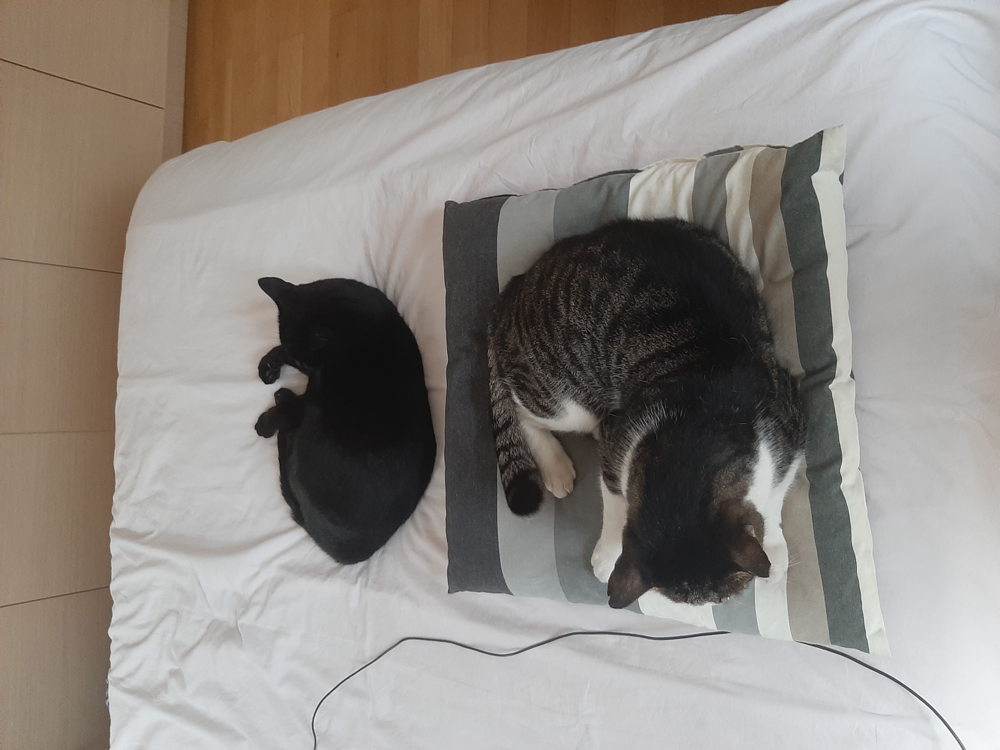

Ongoing
Auctions & Utility Maximization
with Kira Goldner and Taylor Lundy
About · Ph.D. candidate · Boston University
I am a fourth-year Ph.D. student in Computing and Data Science at Boston University, advised by Kira Goldner. I work in algorithmic game theory, mechanism design, and randomized algorithms.
I received my joint BSc & MSc in Electrical and Computer Engineering at the National Technical University of Athens. For my thesis, Learning Augmented Combinatorial Auctions, I was advised by Dimitris Fotakis (NTUA) and Vasilis Gkatzelis (Drexel University).
Research
Ongoing
with Kira Goldner and Taylor Lundy
with Alon Eden, Kira Goldner, and Eldar Kerner
with Kira Goldner and Divyarthi Mohan
with Shahar Dobzinski, Alon Eden, Kira Goldner, and Ariel Shaulker
with Dimitris Fotakis and Vasilis Gkatzelis
Beyond research
I am from Athens and spend many summers in Kalamata. I enjoy traveling, puzzles, walking, exercise, football, and time with my cats, Mavroula and Hadiaris.
Photos ↓
